1과목: 조경계획 및 설계
1. K. Lynch가 설명한 조경계획의 개념도 유형이 아닌 것은?
2. 중국 청조(淸朝)의 건융(乾隆) 12년(1747년)에 대분천(大噴泉)을 중심으로 한 프랑스식 정원을 꾸밈으로써 동양에서는 최초의 서양식 정원으로 알려진 곳은?
3. 다음 조경공간의 색채 설명 중 틀린 것은?
4. 다음 조경계획 과정의 설명 중 틀린 것은?
5. 연간 이용자수가 50,000명, 최대일율(最大日率)이 1/50, 회전율이 1/10, 시설의 이용율이 20%, 1인당 시설의 단위 규모가 10m2일 때 시설의 규모는?
6. 물체의 보이지 않는 곳의 형상을 나타내는 선은?
7. 보양체재(保養滯在)를 위한 자리를 마련하고 일상생활에서 일정거리 이상 떨어진 자연 환경속에 위치되며, 정신적 육체적 스트레스 회복과 건강 회복 증진을 목적으로 이루어지는 것은?
8. Altman은 인간의 영역을 주로 사회적 단위의 측면에서 구분하였는데 다음 중 그 영역에 해당되지 않는 것은?
9. 모가 난 형상과 둥글게 감겨있는 형상 중 둥글게 감겨있는 형상에서 느낄 수 있는 감각은?
10. 다음 중 놀이벽의 설치시 고려해야 할 사항으로 틀린 것은?
11. 주거단지 내 가로망 패턴 중 격자형 패턴의 특징은?
12. 다음 도면의 도시(圖示)에 해당되는 것은?
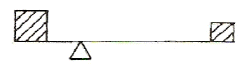
13. 근린공원의 기능 설정은 자연 - 인간 - 사회의 연계성에서 출발하게 되는데 이 중 사회적 기능에 포함되지 않는 것은?
14. 실시설계 단계에서 행하여야 할 내용 중 틀린 것은?
15. 다음 케빈 린치가 주장한 경관구성 요소 중 패스(path)의 설명으로 틀린 것은?
16. 도시공원 및 녹지 등에 관한 법률에서 생활권 공원의 분류에 해당되지 않는 것은?
17. 공중정원으로 유명한 고대의 계획 도시는?
18. 다음 중 근린공원 및 체육공원에 설치하는 골프연습장은 얼마의 공원면적 당 1개소씩 설치할 수 있는가?
19. 다음 중 개략 토양도에 관한 설명으로 틀린 것은?
20. 다음 중 초등학교와 결합되어 설계되어 질 수 있는 공원은?
2과목: 조경식재
21. 잔디의 전면붙이기로 뗏장을 맞붙일 때, 뗏장 1장의 규격이 45cm×30cm라면, 1,000장으로 조성할 수 있는 뗏장의 평수는?
22. 초화류 식재시 자연토양에서 생육 최소 토심으로 가장 적합한 것은?
23. 다음 중 자동차 배기가스에 특히 약한 수종으로만 짝지어진 것은?
24. 흰꽃이 피는 나무로서 일년 중 가장 늦게 피는 나무는?
25. 소나무과 소나무속의 식물 중 한속(束, Bundle)에 5개의 잎이 속생(束生)하는 것이 아닌 것은?
26. 수고 4.5m 정도의 수목을 식재한 후 설치하는 지주로 가장 적합한 것은?
27. 다음 중 오랜 경험을 통해 그 일반적인 경향을 통하여 내음성을 판단하는 방법과 관계가 먼 것은?
28. 다음 수종 중 굴취시 규격표시 방법이 H×R로 표시되는 것은?
29. 가로막이 식재의 기능으로 가장 거리가 먼 것은?
30. 수식 A=24+(N-3)×d는 무엇을 산출하기 위한 공식인가? (단, N:근원직경, d:상수로서 일반적으로 4)
31. 생물 서식처(habitat)의 설명으로 가장 적합한 것은?
32. 다음 그림의 기호에 대한 용어와 단위가 틀린 것은?
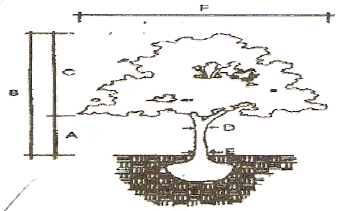
33. 홍만선의 산림경제에 기술된 각종 나무와 꽃의 재배법에 나타난 식재원칙이 아닌 것은?
34. 주거지역과 공업지역 사이의 공해방지를 위한 완충녹지, 계획부지 주변의 소음방지식재, 공중에 떠 있는 분진의 흡착제거를 위한 식재는?
35. 다음 장미류의 학명 중 찔레나무 학명은?
36. 우리나라 골프장 퍼팅그린(putting green)에 활용할 수 있는 잔디 종류는?
37. 조경식물의 명명법 설명으로 옳은 것은?
38. 다음 중 학명의 종명이 원산지를 한국으로 표현하고 있지 않는 것은?
39. 수목의 뿌리 분포를 가정(假定)하는 가장 적당한 기준은?
40. 다음 중 차폐식재에 해당되는 항목으로 가장 적합한 것은?
3과목: 조경시공
41. 다음 토양수분의 보수성에 대한 설명 중 표면장력에 의해 수분이 이동하며, 식물에 가장 잘 이용되는 수분은?
42. 다음 네트워크 공정표와 관련된 내용 중 틀린 것은?
43. 식재용 객토를 리어카로 운반하려 한다. 운반거리는 150m이며 6%의 경사로이다. 계산상의 운반거리는? (단, 6% 경사시 환산계수(a)는 1.43이다.)
44. Kutter공식 또는 Manning 공식을 활용하여 구할 수 있는 것은?
45. 등고선의 성질에 관한 설명 중 틀린 것은?
46. 인공폭포나 인공동굴의 재료로 많이 쓰이는 것은?
47. 다음 그림과 같은 단면의 줄기초가 100m이다. 터파기한 후의 흙량은? (단, 토량변화율 L=1.3, C=0.9 이다.)
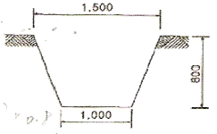
48. 기업의 유지를 위한 관리활동부문에서 발생하는 제비용으로서 제조원가에 속하지 아니하는 모든 영업비용 중 판매비 등을 제외한 비용으로 기업손익계산서를 기준으로 산정하는 것은?
49. 재료가 많이 소요되며, 4m 정도까지로 비교적 낮은 옹벽에 많이 쓰이는 가장 단순한 옹벽은?
50. 다음 중 우수유출량의 산정식(Q=
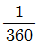
ㆍCㆍIㆍA)에서 I는 강우강도, A는 배수면적 일 때 C가 의미하는 것은?51. 감독자가 공사의 일시중지를 지시할 수 있는 경우가 아닌 것은?
52. 단순보에 등분포하중이 작용할 때 보에 대한 설명 중 틀린 것은?
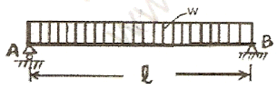
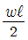
이다.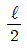
지점에서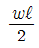
이다.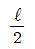
지점에서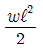
이다.53. 도막이 견고하고, 내후성과 내수성이 좋고, 착색이 선명하고, 성분은 안료+바니쉬이며, 옥내외 목재와 금속면에 사용이 가능한 도료는?
54. 시멘트 쌓는 단수를 10포대로 할 때, 200m2의 창고에 저장할 수 있는 시멘트양은?
55. 토사의 절취 후 운반 작업거리가 60m 이하일 때 가장 합리적으로 사용할 수 잇는 건설기계 장비는?
56. 배수 지역이 방대해서 하수를 한 곳으로 모으기 곤란할 경우에 이용하는 배수 계통은?
57. 1:3:6 콘크리트의 타설에는 시멘트 220kg, 모래 0.47m3, 자갈 0.94m3의 재료가 소요된다. 시멘트 1포대의 가격이 2,400원이라면 소요되는 시멘트 가격은? (단, 시멘트 1포의 무게는 40kg으로 한다.)
58. 다음 중 철근콘크리트의 부착강도가 큰 경우가 아닌 것은?
59. 다음 중 콘크리트의 시공연도에 가장 적게 영향을 미치는 요인은?
60. 다음 중 평판측량에 사용되지 않는 것은?
4과목: 조경관리
61. 다음 곤충의 변태과정 중 완전변태에 관한 내용으로 맞는 것은?
62. 일반적으로 레크리에이션 수용능력에는 3 가지 기본적인 구성 요소가 있는데, 이것에 해당되지 않는 것은?
63. 다음 중 병원체의 주요 전반(傳搬)방법이 틀린 것은?
64. 그 해에 자란 가지에서 꽃눈이 분화하여 그 해에 개화하는 수종들로 옳은 것은?
65. 딱정벌레목으로 가을이 되면 성충은 무리를 이루어 특정한 장소로 이동해 겨울을 지내며, 유ㆍ성충시에 진딧물이나 깍지 벌레를 잡아먹는 익충은?
66. 겨울철 수간이 동결하는 과정에서 발생하는 상열(frost crack)현상에 대한 설명으로 맞는 것은?
67. 뿌리돌림에 관한 설명 중 틀린 것은?
68. 종자, 비료 그리고 흙을 혼합하여 네트(Net)에 넣고, 비탈면의 수평으로 판 골속에 넣어 붙이는 공법은?
69. 다음 중 응애류(mite)에 관한 설명 중 틀린 것은?
70. 콘크리트면에 균열이 생겼을 때 보수하기 위한 재료로 거리가 먼 것은?
71. 다음 중 한치형 잔디류가 아닌 것은?
72. 다음 안전사고 중 설계 또는 설치상 하자에 해당되는 것은?
73. 흉고직경 15cm의 벗나무 500주와 23cm의 은행나무 400주를 인력으로 관수하고자 한다. 다음 표의 조건을 참조할 때 4명의 보통인부가 관수를 끝내기 위한 소요일수는?
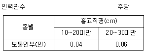
74. 법면 피복용 식물재료가 갖추어야 할 조건 중 틀린 것은?
75. 다음 중 잔디깎기에 관한 주의사항으로 틀린 것은?
76. 보도블록포장 보수시 노반층 위에 부설하는 모래의 일반적인 두께는?
77. 비탈면의 시생회복을 도도하는 경우, 식생공법만으로는 식물의 도입이 곤란한 곳에서 식물의 생육에 적당한 생육 기반을 정리하고 개선하기 위하여 설치하는 공작물 중 토층의 안전을 위한 공법에 해당되지 않는 것은?
78. 사방에서 감상할 수 있도록 정원의 중심부에 마련되는 화단으로 가장 적합한 것은?
79. 다음 전정을 할 때 우선적으로 잘라 버려서는 안 되는 나무 가지는?
80. 다음 전정과 관련한 내용 중 틀린 것은?